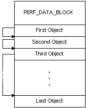
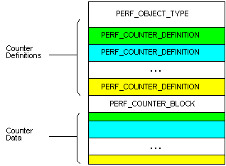
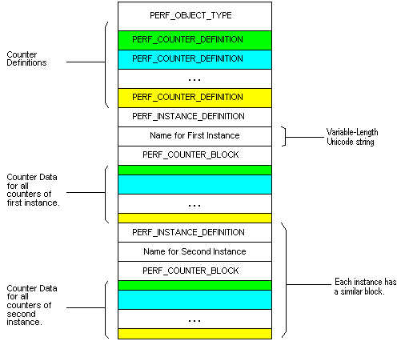

The format of the data retrieved by the RegQueryValueEx function begins with a fixed-length header structure, PERF_DATA_BLOCK. The PERF_DATA_BLOCK structure describes the system and the performance data. The PERF_DATA_BLOCK structure is followed by variable number of variable-length object data items. The header of each object item contains the offset of the next object item in the list. The following diagram shows the basic performance data structure.

There are two formats for the object data items: one that supports multiple instances, and the other that does not support multiple instances.
Each object data item block contains a PERF_OBJECT_TYPE structure, which describes the performance data for the object. The PERF_OBJECT_TYPE structure is followed by a list of PERF_COUNTER_DEFINITION structures, one for each counter defined for the object. For an object with only one instance, the list of PERF_COUNTER_DEFINITION structures is followed by a single PERF_COUNTER_BLOCK structure, followed by the counter data. Each PERF_COUNTER_DEFINITION structure contains the offset from the start of the PERF_COUNTER_BLOCK structure to the corresponding counter data. The following diagram shows the structure of a performance object that does not support multiple instances.

For an object type that supports multiple instances, the list of PERF_COUNTER_DEFINITION structures is followed by a list of instance information blocks (one for each instance). Each instance information block contains a PERF_INSTANCE_DEFINITION structure, the name of the instance, and a PERF_COUNTER_BLOCK structure. The following diagram shows the structure of a performance object that supports two instances.

For an example that uses the offsets, see Displaying Object, Instance, and Counter Names.
Â
Â